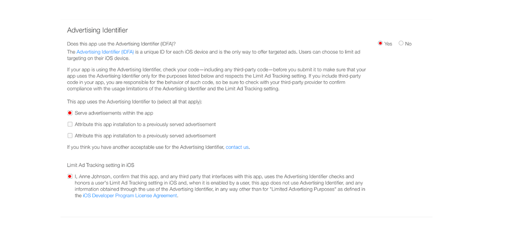

Useful tutorials
• If you need to learn the process of publishing apps on the App Store, read this tutorial: How to publish an app to the App Store• If you need to learn about Xcode and its UI, read these articles:
About Xcode and its UI interface - Part 1
About Xcode and its UI interface - Part 2
• Want to get more info about Parse SDK and its Dashboard on back4app? Check this out: About Parse SDK and back4app
• Want to host Parse Server on Heroku? Check this out: Host Parse Parse Server and Dashboard on Heorku
Customization
• Bundle Identifier & App name: Once you have generated a new App ID and Distribution Provisioning file from the Apple Developer portal (in order for you to be able to upload the binary of your app), you must change theBundle Identifier accordingly to the one you generated in your app's Provisioning Profile. You must also change the
Display Name as you wish, so you’ll see your own app’s name underneath the app icon (see below):
NOTE: Do not change the MyStream folder’s name or Project’s name, otherwise XCode won’t recognize the app and you won’t be able to test it on the iOS Simulator nor Archive it for AppStore publishing.
Also, while preparing your app’s page for Review on iTunes Connect you should write something about how your app works in the Notes field and provide a demo account as well. This is because lately Apple reviewers are acting a bit bad and may reject your app for stupid reasons, we don’t want that to happen, although if it will, don’t get upset, just wait 2-3 days and resubmit a new binary for Review until you get a good reviewer :)
Also, while preparing your app’s page for Review on iTunes Connect you should write something about how your app works in the Notes field and provide a demo account as well. This is because lately Apple reviewers are acting a bit bad and may reject your app for stupid reasons, we don’t want that to happen, although if it will, don’t get upset, just wait 2-3 days and resubmit a new binary for Review until you get a good reviewer :)
Generic iOS Device on the devices list and then click on Product -> Archive to launch the Organizer and archive your app (see below):• User Interface: If you want to edit the User Interface of this app, you can do so by editing the Storyboard file called
Main.storyboard. You can edit buttons, labels and ImageViews via the Inspector panel on the right side of the Xcode window, and select them by the the Document Outline panel.
Please always use the latest version of Xcode.
• Images: You can easily change App icons, logo, buttons and other images by accessing the Assets.xcassets folder and editing the .png and .jpg images in there, just do not rename them so XCode will still recognize them.Make your reskin and save your new
.png files with the same names as the existing ones in the project.
• Terms Of Service HTML file: You can find an HTML file called
tou.html into the XCode project, that’s a file you can edit as you wish in order to get approved by Apple under the EULA agreement, since this app is providing public contents that may also be reported by users and must be moderated by you or who works with you. You must edit it as you wish, since there is APP_NAME here and there, replace it with your app’s name and read it carefully before publishing the app on the App Store.
IMPORTANT: You should also check the
Privacy Policy statements on the bottom of that file and edit the contact email addres into your own email adress:
href= "mailto:support@yourdomain.com"> support@yourdomain.comThat's important for EU GDPR laws since 25 May 2018.
In case some user will ask you to delete his/her account, you must enter your Parse Dashboard, search for its
objectId or username in all Classes, and delete the rows that contain such objectId in their cells (Pointers included).
Configuration
Head overConfigs.swift file and check out the comments in such file which will help you editing this template.
• Add Stickers: This app contains 13 sticker png images, in order for you to add stickers to this app you need to add new Image Sets in the
STIKCERS folder (in the Assets.xcassets folder) in Xcode and name them progressively.Example: if you want to add a 14th sticker, do the following steps:
1. Create your png images, 3x, 2x and 1x size (check the existing ones as a size reference)
2. Create an Image Set in the
STIKCERS folder and drag your images into the 3x, 2x and 1x cells.3. Rename that Image Set as
s13 and enter Configs.swift.4. Change the number of the following variable into
14:
let STICKERS_AMOUNT = 14
You have to repeat the steps above for all new stickers you'll add in this app. If you're wondering why the Image Set's name is
s13 and the STICKERS_AMOUNT is 14, that's because the app creates an array of stickers and Arrays are 0-indexed, so the s0 is the 1st sticker, the s1 is the 2nd sticker, and so on. You can easily understand that the 14th sticker of the example above is at 13 index position, and that's why your Image Set is named s13 ;)
Parse Database setup
Before using the app, you must create your own App on your back4app Dashboard. The link we’ve provided above points already to the back4app's Dashboard, but in case you don’t have an account on back4app.com yet, you’ll be redirected to the Sign Up page.Once you’ll be signed in on back4app, enter your Dashboard and simply click on the Build new app button, give your app a name and a brief description (optional), click
Next and you’ll be redirected to the settings page. Click on SETTINGS in the
Core Settings box, copy the App ID and Client Key strings and replace the existing ones into Configs.swift


Configs file in the app's project:
let PARSE_APP_ID = "pJf7oFpFep7wDQTqEM6RDarUhuZ8hmxQ7zofOIxQ"
let PARSE_CLIENT_KEY = "1BY9Ojxt0gwMzgpGF5noXWbLc1p2fJ6Do3mrrRoD"
Please note that users can instantly report offensive/inappropriate content and users, so you should daily or weekly check your Parse Dashboard for reported content and take action for them, you can check the
For the Streams and Comments classes, the
PLEASE NOTE that if you'll remove a row in those classes, you will have to find all the references to its
isReported and reportedBy columns of the Comments, Streams and User classes.For the Streams and Comments classes, the
reportedBy is an array of Users objectId's who reported content, which means that those users won't see those content, but other users will still see them, unless you will delete the reported rows in your Parse Dashboard.PLEASE NOTE that if you'll remove a row in those classes, you will have to find all the references to its
objectId in the other classes too and remove those rows where its objectId is contained.
Facebook Login setup
1. Create your own Facebook App here: Facebook developer console2. Open your Facebook App Dashboard and select your application.
3. Select Settings from the left navigation.
4. Click Add Platform at the bottom of the page and select iOS.
5. Locate your Bundle Identifier in Xvode and copy it to your clipboard.
6. Return to the App Dashboard and paste your
Bundle Identifier into the Bundle ID field.7. Enable Single Sign On.
8. Click Save Changes at the bottom of the App Dashboard window.

9. Enter your app Server Settings on back4app, scroll down to the Facebook Login section and click SETTINGS

10. Paste your
Facebook App ID in the empty filed and click the + button, then SAVE
11. Go in Xcode, enter
Info.plist, expand the URL types row as shown below, paste your Facebook App Id with fb prefix in the Item 0 row, your Facebook App Id without fb in the FacebookAppID row and type the name of your app in the FacebookDisplayName row.
12. Lastly, enter the App Review section and make your app oublic:

You’re done with setting up Facebook Login in this app, now you can test it.
Push Notifications setup
1. Follow this tutorial to create your Development and Production APS certificates: http:/hubpages.com/technology/How-to-create-APN-Push-Notifications-certificates-on-iOSOnce you've generated your .p12 files, save them on the Desktop.
2. Open your App’s dashboard on back4app, scroll down to iOS Push Notifications box and click SETTINGS
3. Click Choose file to upload both your
.p12 certificates. Please note that you must upload them one by one, so upload your Development certificate first and click SEND, then upload the Production certificate and click SEND again. Once you're done, click BACK to go back to your app's dashboard.

4. Look for the Cloud Code box in your app's dashboard, click SETTINGS to enter it, then click Choose file to upload the
main.js file included in the package of this app into CloudCode.Lastly, click SAVE

You’re done with setting up your app to send/receive Push Notifications!
AdMob Intersitial ads setup
In order for you to display your own AdMob Interstitial ads, you must create a Interstitial Ad UNIT ID on the AdMob website.Once you’ve got your Unit ID, replace the red string below with your AD UNIT ID in
Configs.swift:
let ADMOB_INTERSTITIAL_UNIT_ID = "ca-app-pub-3940256099942544/1033173712"
• Apple Review process: Sometimes it may happen that an app gets rejected once by Apple reviewers because of ads, that’s an issue we encountered too and we can’t still understand why since we then re-submitted an app without any change and it got approved, and lots of developers are angry about it as well.
Anyway, check out the screenshot below, you’ll get it after clicking on Submit For Review button on iTunes Connect, check the options shown below and everything should go smoothly.
If your app will get rejected once because of IDFA issue, don’t get mad, just resubmit a new binary to iTunes Connect via XCode and make sure to check the options below:

F.A.Q.
-
About Parse SDK and back4app
Read this article for more info about back4app and Parse SDK: About Parse SDK and back4app -
Can I host Parse Server on my own server?
Yes, although I don’t provide support for the setup process, you can read the official Guide here: http://parseplatform.org -
What about free support for this template?
I can offer free support for bugs encountered in the original code. Instead, if you’ve edited the code and messed something up with it, I may apply some fee to fix it either via TeamViewer or by checking your app project files directly on my computer. -
I’m new to Xcode UI interface, any help?
Sure, start by reading this tutorial, it will surely help you get familiar with Xcode and its UI interface: About Xcode and its UI -
Should I use the latest version of Xcode to edit this template?
Yes, I usually update all my apps to the latest version of their IDE. -
How do I remove AdMob Interstitial ads?
The easiest way is to use the Find tool in the left panel of the Xcode window and search for the following line of code:
self.showInterstitial()
You will get a list of swift files where that line of code is present. Just comment it out and Interstitial ads won't show up. -
I get a Code signing error in Xcode
That’s a bug of Xcode with macOS, check this sample video to see how to fix it: Fix Code sign error
Website version
You need to have your own web hosting and domain in order to upload all files included in theWebsite folder of this template's package.Your server must have PHP 5.4 or higher installed (GoDaddy and other hosting providers have it by default).
Before uploading the files to your server, you can edit the with
Sublime Text or any other text or HTML editor softwares. All images are located into the assets/img/ folder.
You need to open
Configs.php and replace the existing keys with your own ones (like you did for the mobile version), what's needed in this case is your back4app app's App ID, REST API Key and Master key:
// REPLACE THIS STRING WITH YOUR OWN App Id FROM back4app
'LShV0Q5wA4FwXCjTmblIXRLuOkc52NR6aEbhzpyU',
// REPLACE THIS STRING WITH YOUR OWN REST API Key FROM back4app
'dT80vO9I5wH2dQN4Ypul1yb4E9a18UGAamzwRH69',
// REPLACE THIS STRING WITH YOUR OWN Master Key FROM back4app
'RyQdN5NVJPbhXJklpt8ZOUDJGSJK3DFbdxM8FaHI' );
Then replace the string of the
$GLOBALS['WEBSITE_PATH'] variable with the URL where you'll upload all the files. For instance, if you upload them to your root folder (usually the public_html one), the URL should look like this: http://www.yourwebsite.com/ (the "/" at the end of the URL is needed). Instead, if you uploaded the files into a specific folder of your server, the URL must be somehting like: http://www.yourwebsite.com/your_folder_name:
// IMPORTANT: REPLACE THE STRING BELOW WITH THE FULL URL OF THE ROOT OF YOUR WEBSITE:
$GLOBALS['WEBSITE_PATH'] = 'https://www.cubycode.com/mystream/';
Follow the comments of the other variables in the
Configs.php file to edit them accordingly.
• FACEBOOK LOGIN SETUP
You've previously created your Facebook app for the mobile version, so what you need to do to allow the website to login with Facebook is the following:1. Click Add Platform at the bottom of the page and select Website.
2. In the App Domains field, type only the domain name of your website, NOT the whole URL (ex:
mywebsite.com)3. Click the Show button of the App Secret box to display it, you have to copy it and replace the existing one in
Configs.php:
$_GLOBALS["FACEBOOK_APP_SECRET"] = "23159a93aa689c4a684e08dcfa74d165";
4. Copy the
App ID and and replace the existing one in Configs.php:
$_GLOBALS["FACEBOOK_APP_ID"] = "1373896799328580";
5. In the Website section, type the full address of your website (ex:
http://mywebsite.com/index.php).6. Click Save Changes at the bottom of the App Dashboard window.
7. Now enter
Settings in the Facebook login section and type the full URL of your website, where you have hosted all the files, with the http://www. prefix and the/fb-callback.php suffix, like this example:
http://www.mywebsite.com/fb-callback.php
8. Switch Use Strict Mode for Redirect URIs and Enforce HTTPS into
Yes, and finally click Save changes:
You’re done with setting up Facebook Login for the Web version.